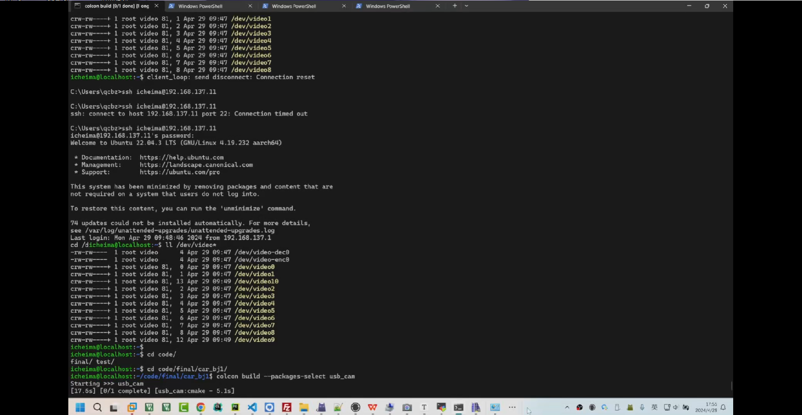
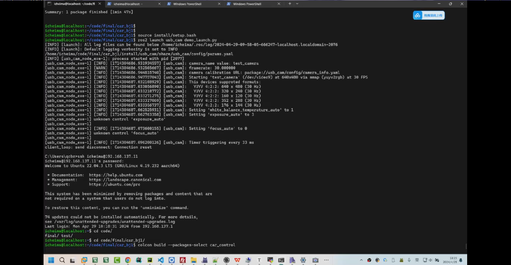

<!DOCTYPE lake>
<p data-lake-id="u6f0aa24e" id="u6f0aa24e"><span data-lake-id="u4387f03b" id="u4387f03b">启动摄像头节点</span></p><p data-lake-id="ucb1d8d23" id="ucb1d8d23"><span data-lake-id="u21a804f2" id="u21a804f2">colcon build --packages-select usb_cam</span></p><p data-lake-id="uc3c44832" id="uc3c44832"></p><p data-lake-id="u1d53a4c7" id="u1d53a4c7"><span data-lake-id="ud196e8d5" id="ud196e8d5">之后用source命令启动变量，source install/setup.bash</span></p><p data-lake-id="u7a1065e6" id="u7a1065e6"><span data-lake-id="u31122468" id="u31122468">之后启动节点 ros2 launch usb_cam demo_launch.py</span></p><p data-lake-id="ue09a68fd" id="ue09a68fd"></p><p data-lake-id="u8fc926e6" id="u8fc926e6"><span data-lake-id="ud44f6d1f" id="ud44f6d1f">启动串口</span></p>